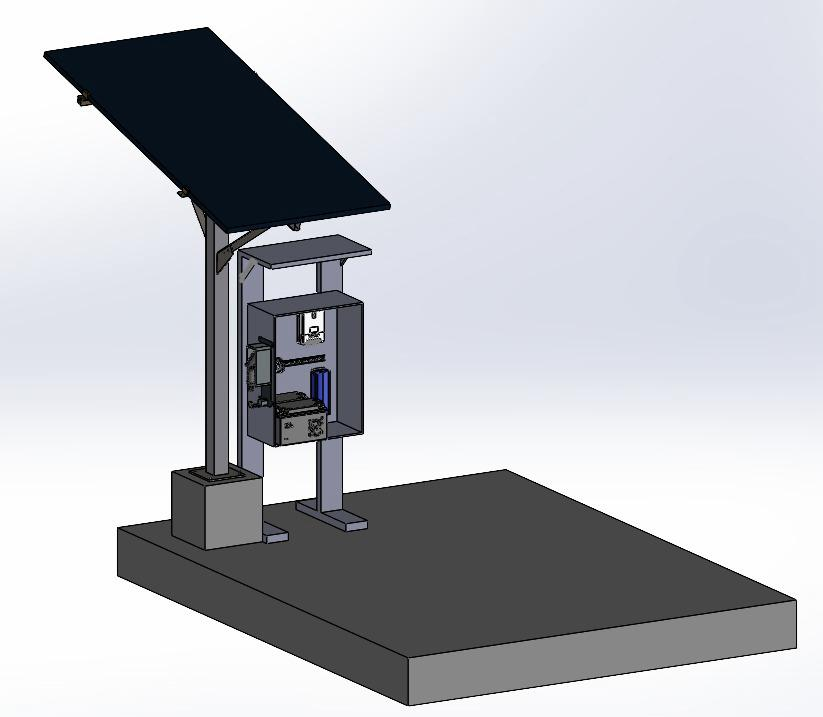
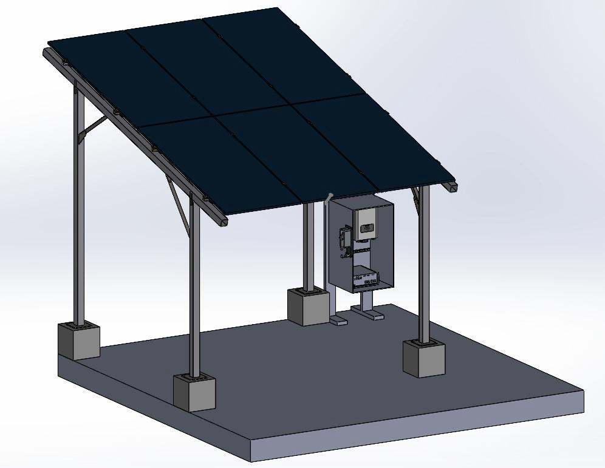
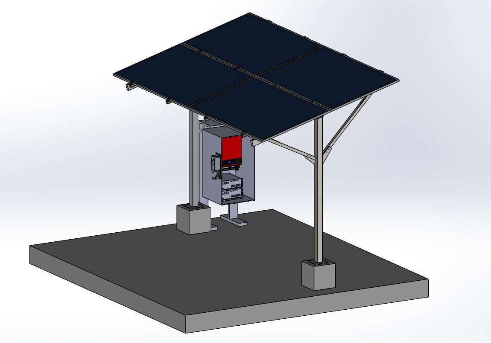
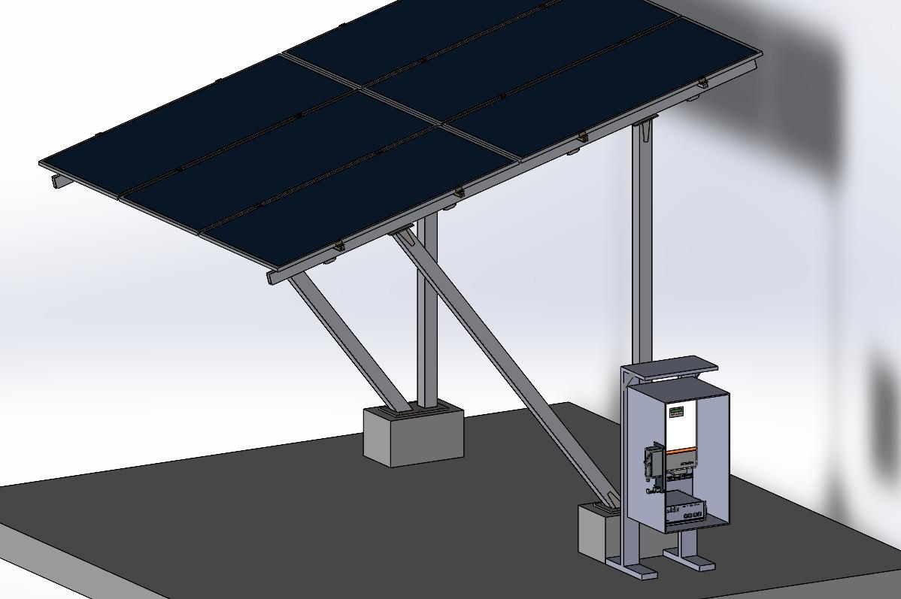

Potencia no es energía
Los W o kW indican qué tan rápido entrega energía el cargador. Los Wh o kWh indican cuánta energía entrega o almacena. Ejemplo: 800 W durante una hora son 0,8 kWh antes de pérdidas.
ENERGÍA SOLAR + MOVILIDAD ELÉCTRICA
Una estación de carga lenta que conecta generación fotovoltaica, almacenamiento y supervisión en una sola plataforma.
ANTES DE ELEGIR TU ESTACIÓN
Cuatro datos que ayudan a elegir un diseño y entender lo que realmente puede ofrecer.
Los W o kW indican qué tan rápido entrega energía el cargador. Los Wh o kWh indican cuánta energía entrega o almacena. Ejemplo: 800 W durante una hora son 0,8 kWh antes de pérdidas.
La potencia de los paneles (Wp) es nominal, no constante. La generación real depende de la ciudad, radiación, sombras, orientación, temperatura y pérdidas.
Antes de elegir verifica el voltaje, las fases, el conector y la potencia admitida por el vehículo o equipo. Un inversor y un cargador no son lo mismo.
El respaldo útil depende de la profundidad de descarga, las pérdidas y los límites de corriente del BMS. La autonomía mostrada es una estimación, no una garantía.
Estos diseños son escenarios académicos. Los enlaces comerciales sirven para consultar equipos; no representan certificación de compatibilidad, conformidad RETIE ni una recomendación de compra sin validación profesional.
CUATRO PUNTOS DE PARTIDA
Explora los diseños del equipo y usa el dimensionador para estudiar tu propio escenario.
Los componentes incluyen enlaces a tiendas, proveedores o fichas técnicas. Cada enlace indica si es un producto exacto, una consulta o una alternativa; la disponibilidad puede cambiar.
Las imágenes muestran los CAD recibidos. Las especificaciones siguientes corresponden a la revisión eléctrica: algunas cantidades de paneles todavía difieren del modelo CAD.

ESTACIÓN DE CARGA
Para un cargador de bicicleta o patineta compatible, con consumo de hasta 800 W. Una sesión de una hora entrega hasta 0,8 kWh a la entrada del cargador.
Los enlaces permiten comprar, consultar o revisar referencias. La alternativa BELTTT no confirma el modelo BEP1000S; verifica la ficha antes de comprar.
Suministro estimado $6.595.442

ESTACIÓN DE CARGA
Para un vehículo con cargador compatible con 220 V y hasta 3,7 kW. En una hora puede recibir hasta 3,7 kWh a la entrada del cargador.
Confirma la referencia exacta, las tensiones, el BMS y las condiciones de suministro antes de comprar.
Suministro estimado $22.353.941

ESTACIÓN DE CARGA
Para un vehículo y punto de carga compatibles con 220 V y hasta 7 kW. En una hora puede recibir hasta 7 kWh a la entrada del cargador.
Confirma la referencia exacta, las tensiones, el BMS y las condiciones de suministro antes de comprar.
Suministro estimado $25.523.604

ESTACIÓN DE CARGA
Para un vehículo y punto de carga compatibles con 380 V trifásicos y hasta 11 kW. En una hora puede recibir hasta 11 kWh a la entrada del cargador.
El MPPT está integrado en el inversor. La compra del equipo no garantiza compatibilidad con la red trifásica del lugar.
Suministro estimado $38.767.038
El respaldo corresponde a la revisión de baterías: DoD del 80 %, capacidad retenida del 80 %, reserva adicional del 5 % y eficiencias de inversor del 85 %, 80 %, 85 % y 90 %, respectivamente. Supone carga constante, sin aporte solar ni de red. No equivale al tiempo de carga completa del vehículo.
El tiempo de carga depende de la energía que falta en el vehículo, las pérdidas y la potencia que admite su cargador. La energía indicada por hora es un máximo teórico a la entrada del cargador. El diseño de 7 kW contempla apoyo de red; su aporte solar diario estimado es del 60,5 % bajo los supuestos de la revisión.
Los costos provienen de la comparación de suministro de la presentación del equipo, recibida el 15 de noviembre de 2026. El total suma el costo eléctrico y el mecánico y estructural. La captura no detalla impuestos, transporte, instalación ni precios por componente; tampoco permite confirmar que el presupuesto incorpore todas las referencias de la revisión eléctrica. Son valores estimados de referencia, no cotizaciones vigentes.
HERRAMIENTAS DEL PROYECTO
Del escenario energético a la consulta del sistema.
Elige por dónde empezar.
ARQUITECTURA PREVISTA
Generación solar como fuente principal.
Red eléctrica como respaldo, con conmutación y protecciones por verificar.
ALCANCE DEL PROTOTIPO
Dimensionador, validaciones y acceso al dashboard externo. Las pruebas de software están documentadas.
Generación FV, almacenamiento y respaldo de red. La selección comercial requiere fichas y revisión de protecciones.
Sensores → ADS1015 → Raspberry Pi → ThingsBoard. El repositorio no acredita calibración, conexión física ni conformidad normativa.